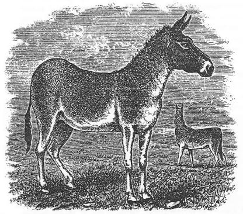
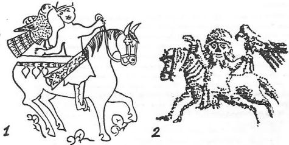

Giriş: Manas’ın gençliği ve evlenmesi ile ilgili bu bölümde de görüleceği gibi Manas, bir hükümdar ve büyük bir Han olarak görünmüyor. Oğuz-Han gibi dünyayı zapt etmek ve bir "Dünya Devleti" kurmak gibi idealleri onun sözlerinde bulmak imkânsızdır. Manas-Han, yapacağı işlerden söz ederken, "çadırları mızrak ve kılıçla deleceğini, güzel kızlar ve güzel atlar" alacağını söyler ve bu parçada olduğu gibi, bundan ileri de gidemez.
Manas'ın, Kırgızların Orta-Yüz reisi Kökçe-Han'la yaptığı anlaşma teklifi de, burada üzerinde durulacak bir noktadır. "Malının yarısını" vermek sureti ile, bir "Vassal" olma anlaşması söz konusudur, burada. Manas böylece tâbi olduktan sonra, ayrıca elbette ki "Yıllık vergi"leri de verecekti. Diğer bir kaynakta, bu şekilde bir anlaşmanın başka bir örneğini şimdilik bulamadık. Yalnız, Çingiz-Han'ın akınlarında böyle bir sistem mevcuttur. Başlangıçta, tâbi olan memleketlerden Çingiz-Han, büyük bir pay alırdı. Ondan sonra o yere bir Baskak, yani bir "vergi memuru" tayin eder ve bu suretle yıllık vergileri de tahsil ederdi. Başlangıçtaki payın ne oranda olduğunu tayin etmek, tabii olarak güçtür.
"Savaş güreşi"ni bu parçada da görüyoruz. Bundan sonra, Nogay- Han'ı Yoloy-Han'la, yine Manas'ın adamlarından Koşay-Han'ın "savaştan önce yapılan güreşlerini" göreceğiz. Fakat buradaki fark, biraz daha ayrıdır. Bu kısımda bizzat iki Han birbiri ile yenişinceye kadar güreşirler. Öyle anlaşılıyor ki, sonradan Manas ihtiyarlayınca bu güreşlere girmemeğe başlamıştır.
"Koca-Tanrı" deyimini bu bölümde görüyoruz. Kırgızlar Tanrı'ya, "Kojo-Kuday" derlerdi. Tanrı için bazen, yalnızca "Koca" sözünün kullanıldığını da görüyoruz. Esasen Altay efsanelerinde Tanrı hep, kayın ağacının üzerinde "gök sakallı bir ihtiyar" olarak görülür. Bizce, Koca sözünün, Tanrı için kullanılmasının sebeplerini burada aramak lâzımdır.
"Gök sakallı vezir", bu efsanenin de önemli bir motifidir. "Gök" ve "Göklük," Tanrı'nın rengi ve sembolüdür. Gök-Kurt Tanrı'nın nasıl bir sembolü oluyor idiyse, "Gök sakallı vezir" de, Tanrı tarafından gönderilmiş, hükümdarın yardımcısı olan kutsal bir kişi idi. Mengdi-Bay ilk olarak burada, Manas ve babası Yakup-Han'ın veziri olarak görülmektedir. Bunda bir yanlışlık olmalıdır. Çünkü az sonra Mengdi-Bay, Temir-Han'nın hilekâr, hırsız bir veziri olarak ortaya çıkacak ve Manas'ı zehirleyecektir.
Alpler ve yiğitler: Sol yanda alplerden (Yoro), sağ yanda da yiğitlerden, (Çoro)'dan bahsediliyor. Radlof, Yoro sözünü,"yoldaş" olarak tercüme ediyordu. Hâlbuki Yoro, "büyük kahraman ve alp" anlamına gelir. Çora/Çoro da, yiğit ve kahraman demektir ama; derecesi daha aşağıdır. Kara-Han'ın oğlu Alman-Bet, Manas'ın bir Yoro'sudur. Yorı-, "yürümek" fiilinden gelmiş olsa gerektir. Han'la beraber yürüyen bir "Alp" anlamına gelmelidir. Cora/Çora ise, Han'ın ardından gelen yiğitlerdir. Onun için Manas'ın "kırk-yiğidi"ne, hep, "Kırk-Çoro" denirdi. Kırgızlarda da sol yan, sağ yandan daha önemli idi.
Soyluların, soylularla anlaşması: Öyle anlaşılıyor ki eski Türk cemiyetinde, soy, derece, rütbe ve mevki, fevkalâde büyük bir rol oynuyordu. Bilhassa devlet işlerinde bunun büyük bir önemi vardı. Kız alıp verme işinde Temir-Han, Yakup Han'ın veziri ile görüşme ve anlaşmağa yanaşmıyor. "Benimle konuşup, anlaşacak insanlar, şu ve şu özelliklere sahip olmalıdır", diyor. "Sen bir kul ve köle olarak doğdun", diyor. Vezir veya bir bey olsa dahi, Han soyundan gelmedikçe, bu şartların değişmediğini görüyoruz. Manas-Han, çadırda yalnız başına ziyafete davet edildiği zaman da destan, "Kara-başlı kişisiz", yani "yalnız başına, yiğidsiz, muhafızsız", deyimini kullanıyor.
At ve koyun çobanlığı: Manas'ın Ulu-Hatun'u Kanıkey'in babası "koyun çobanı", Manas ve ailesi ise, "at çobanı" idiler. Yani, bir kabile veya kabile grupları at yetiştiriyorlar ve bazıları da, yalnızca koyun yetiştirmekle meşgul oluyorlardı. Tabii olarak bu, bir "ihtisas" işi idi. Bu sebeple, bu her iki zümre, birbirlerini küçük görüyor, "at çobanı!" veya "koyun çobanı!" diye de, karşılıklı hakarette bulunuyorlardı. Bu da yetmiyormuş gibi, at çobanları koyun yetiştirenleri bu işten vaz- geçirip, onları da atçı yapmak için çaba sarfediyorlardı. Yukarıdan beri anlattığımız bu konuları, bu efsane içinde açık olarak okuyabiliyoruz. Yine bu metinlerden anlaşıldığına göre, at çobanları, deve çobanlığını da beraber yürütüyorlar ve bir nevi "at-deve" yetiştirme düzeni meydana getiriyorlardı.
İyi ve kötü vezir: Efsanelerde de, tıpkı roman ve filmlerde olduğu gibi, bir "kötü adam (Bad man)" tipi vardır. Bakay gibi büyük vezirlerin yanında, Mengdi-Bay gibi, hırsız, haris, daima kötülük düşünen vezirler de yer almıştı.
Manas'ın ölümü ve cenaze merasimi: Zehirlenen Manas ölüyor. Bunun için de efsane, "Manas'ın uçan ruhu çıkıp gitti ve gerçek yuvasına yerleşti", diyor. Bu sözde, şamanist fikirlerle İslamiyet çok güzel bir şekilde uygunlaştırılmıştır. Mezar için de, "Ak-saray" ve "Gök-saray" deyimleri kullanılıyor. Ak-saray, genel olarak dünya otağları için kullanılan bir deyimdir. "Gök-saray" daki, "Gök" sözü de, kutsal bir renk ifade eder. Fakat bu, bir saray değildi. Tıpkı, "Gök-Sakallı", "Gök- Kurt" veya "Gök-Türk" gibi...
"Dokuz sayısı" da cenaze merasimlerinin anlatılmasında büyük bir rol oynamaktadır. Ölü, dokuz-gün bekletiliyor, doksan-kısrak kesiliyor, dokuz-kat kumaş halka dağıtılıyor. Ondan sonra da aynı cenaze törenin de, "altmış" sayısı rol oynamağa başlar. Altmış-gün bekletilir, altmış-kısrak kesilir ve ölü mezara konarak, bu suretle merasim, biter.
"Altmış sayısı" bir "Takvim" rakamıdır. Bu nevi takvimlere "Sexagénaire" takvim derler. Çin takviminin esası, bu sisteme dayanır.
Kavak ağacı ve dirilme: Bu çağda, İslamiyet’in tam manası ile Kırgızlar arasına yerleşmiş olmasına rağmen, Manas destanında eski Şamanist izleri bulmak mümkündür. Manas'ın Ulu-Hatun'u Kanıkey, rüyasında "ocak’ "dan bir kavak göğerdiğini ve bunun göğe kadar yükseldiğini görüyor. Kayın pederi ile annesi de, bu kavağa tırmanarak göğe çıkıyorlar. Evin mukaddes yeri "ocak"tır. Bu da çok önemli bir motiftir. Bu rüyadan sonra, Manas diriliyor ve hayat buluyor.
Yas ateşi: Manas dirilip de eve gelince, Manas'ın annesi, ocakta devamlı yanan ateşi söndürüyor ve memesini çıkararak oğluna bol bol sütünden emziriyor. Bu, Türk mitolojisinde az görülen; fakat fevkalâde önemli bir motifidir, ölen ölünün arkasından ateş yakılması, metinlerde ve seyyahların anlattıkları adetler arasında görülmüyor. Ateş yakma, bir "tören icâbı" dır. Belki de, yas merasimi bitinceye kadar, bu ateş yakılıyor ve söndürülmüyordu. Fakat manas dirilince, artık buna lüzum kalmadığı anlaşılıyor.
Dirilen Manas'a "meme emzirme" olayı da, izahının güç olmasına rağmen önemli bir motiftir. Artık, dirilen bir insan, yeniden doğmuş gibi mi farz ediliyordu? Bu noktanın açıklanması güçtür.
İyi ve kötü kadın: Manas ölünce, Manas'ın annesi, babası ve kız kardeşi, fakrü zaruret içinde kalıyorlar. Manas'ın baş ve birinci hatunu Kanıkey, onları dilenerek, çalışarak besliyor. Öyle anlaşılıyor ki, aile içinde, erkekten sonra -ihtiyar ve çocuklar hariç- meşguliyet ve vekâlet, kadına düşüyordu:
"Manas, Manas olanda,
"At üstüne konanda,
Onun ak-kula renkli, soylu güzel atına, hiç bir at yetişmezdi. Onun ak zırhlarına, hiç bir ok batmaz idi..." (Pb., V, 63, 85).
Sefere çıkmadan önce de şöyle söylerdi : "Yurtların örtüsünü, mızrakla deleceğim. Kapının üst kısmını, kılıçla keseceğim. Taştan yapılmış evi, yerle bir edeceğim. Kumdan yapılmış evi, mezarlık edeceğim. Güzel kızları ise, bir tüyle çalacağım. Atlan sargısından, tutarak alacağım..." (Pb., V, 62).
"Manas, Alman Bet'le birleştikten sonra, Orta-Yüz reisi Kökçe-Han'la arası açılır ve onunla savaşa tutuşmağa mecbur olur. "At ve sığırlarını, ben kendim alacağım; onun elbisesini, ben kendim giyeceğim..." diye bir konuşma yapar ve Kökçe-Han'la savaş için yola koyulur. Derken, Kökçe-Han ile karşılaşır ve Kökçe'ye malının yarısını kendisine vermesini teklif eder. Yok, eğer malını bölüşmezse, kendisini öldüreceğini de ilâve eder. Tabii olarak, Kökçe-Han Manas'ın bu teklifini kabul etmez ve şöyle cevap verir;
"Herhalde, ölmelidir ikimizden birisi,
"Yahut yaşamalıdır, ikimizden birisi..."
Bunun üzerine Manas'da ona şöyle cevap verir:
- "Korkma! Ben seni hiç, korkutmak istemedim. Ben sana diyorum ki, seninle vuruşalım. Tüfeklerimiz ile, seninle atışalım. Kavraşalım birlikte, seninle güreşelim. Elbet birimiz ölür, seninle deneşelim..." (V, 66). "Bunları dedikten sonra, başlarlar Almalı-dağı'nda güreşe. Güreşir, güreşirler. Güreş, günler, haftalar ve aylarca devam eder. En sonunda Kökçe alt olur güreşte. Bu defa başlarlar tüfekle(?), (Herhalde okla) atışmağa. Ama Manas'ın attığı kurşun bir türlü Kökçe'ye erişmez. Zaten Kökçe, güreşle Manas'ı alt edemeyeceğini biliyordu. Bunun için de, "Köpek gibi boğuşmayalım, köle gibi yırtışmayalım," diye güreşe son verir ve atışmağa başlar. İşte Kökçe bu hilesinde başarı gösterdikten sonra, artık Manas'ın sonu geldiğine inanır ve gerçekten Manas'ı kalbinden bir kurşunla vurur. Bunun üzerine ağır yaralanan Manas, Tanrısını çağırmağa başlar:
- 'Tanrım, Tanrım, ey Koca! Seni ey Koca-Tanrım, seni çağırıyorum! Canımı emanet et!" Der ve bundan sonra da Kırk-Yiğid'ine döner ve onlara birer birer sorar, ne edeyim, ne yapayım, diye. Manas, dünyayı zaptetmeden, kendisini öldürmemesini diler Tanrıdan. Taun, onun duasını kabul eder ve güç verir Manas'a. Manas bir doğrulur yerinden. Çeker kılıcını kınından, öyle vurur ki kılıcıyla, Kökçe ile atı ikiye bölünürler...
"Manas'ın ili içinde Mengdi-Bay adlı "gök sakallı" biri vardı. İl içinde sözü çok geçerdi. Bir gün ata bindi ve gitti Manas'ın babası Yakup-Han'a : - "Bilir misin, Temir-Han adlı bir Han vardır. Yemeğinde tuzu çok, zengin bir insandır. Onun da, Kanıkey adlı bir kızı vardır. İki kollarının, iki yeni adeta birer zırh gibidir. Bence Manas'a tek lâyık kız, bu olsa gerek. Gel, bu kızı isteyelim," der. Yakup-Han da buna razı olur ve Mengdi-Bay yola çıkar. Az gider, uz gider ve Temir-Han'ın otağına ulaşır. Temir-Han'dan Manas için kızını ister. Temir Han da ona:
- "Ey ala-gök sakallı Mengdi-Bay! Sen soylu biri değilsin. Sen köle doğmuş bir kulsun. Ben kullarla işe giremem. Ben öyle birisi ile konuşurum ki, sol yanında yoldaşlar (yoro), sağ yanında da yiğitler (Çoro) bulunsun. "Eğer böyle, yoldaş ile, yiğitler ile kuşanmış ise, eğer oğlu var ise, başına giyinecek de eğer börkü var ise, eğer etrafında (tögörök), çok savaşçı, gözü pek, çok da alpı var ise; vardır elbet de onun, erki ile kuvveti. Gelsin benden kızımı o istesin!.." Der ve Mengdi-Bay da atına biner ve Yakup-Han'a geri gider. Anlatır, Yakup-Han'a, ne olupbittiyse. Bu defa da Yakup-Han, oğlu Manas için Temir-Han'a kız istemeğe yollanır. Ne ise, Temir-Han'ın otağına varır ve Temir-Han'ın kızını ister. Oğluna münasip bir kız bulamadığını, araya araya da kendisininkini bulduğunu söyler ve şöyle ilâve eder:
"Tuzunu gel pahalı sat, et kızı Manas'a vaad!"
"Ama Temir-Han buna kızar : "Manas henüz daha kan döktü, baş aldı mı ki?" Diye bağırır. Yakup-Han da bu sözü duyunca yerinden, fırlar. "Manas'ın "kırmızı savaş bayrağını" açıp, dağlar gibi yürüdüğünü, fırtınalar gibi kükrediğini, yurtlar basıp, iller aldığını duymadın mı," diye cevap verir. Ayrıca da ilâve eder : "Kızını vermezsen, elbette biz savaşır ve kızı senin elinden harp ganimeti olarak alırız," diye de tehdit eder.
"Temir-Han bunu duyunca, hemen at gönderir, ileri gelen beyleri, başı tuğlu beyleri çağırtır ve evine toplar. "Yakup-Han geldi, benden kızımı istedi. Siz ne dersiniz," diye onlardan sorar. Hanlar, Beyler bu sözü duyunca, "verelim", derler. "Manas, savaşçıdır, kuvvetlidir," derler. "Gelir de, kızla beraber pek çok şeyi de alır, gider," derler.
"Dönelim, kızı alamayınca evine dönen Manas'ın babasına. Yakup-Han evine döner, gelir Manas'a, ne var ne yoksa hepsini anlatır. - "Oğlum, al kırk-yiğidini ardına, Alman-Bet'i de yanına, git kendi işini kendin gör," der. Manas da, bunu duyunca hemen atlanır, pulatlanır ve etrafındakilerle yola çıkar. Manas'ın yola çıktığı haberi, Temir-Han'a ulaşır. Elçiler gelir Temir-Han'a : - "Çabuk, Han'ım, durma hemen ata bin," derler. "Açılan ak bayraklar rüzgârla dalgalanıyor, ordular ise yeri sarsarak geliyorlar," derler. Bunu duyan Temir-Han yerinde duramaz, hemen fırlar, kalkar ve gelenlere bakar. Bakar ki gerçekten, Manas'la kırk yiğidi önde, onların arkasından da kırk bin kişilik bir ordu geliyor. Hemen kararını değiştirir ve Manas'la ordusunun davet edilmesini ve ağırlanmasını emreder. Manas'la ordusu ve arkasından da develerle dünür için, kadınlar gelir, yıkılır ve başlarlar yiyip içmeğe. Temir-Han bu işe razı olur ama; veziri bir kötülük düşünür. Acaba Manas'la ordusunun arasını açar mıyım, diye. Tutar, Manas'ın yiğid-lerine izzet ikram eder, dağ gibi et, deniz gibi kımız toplatır. Manas'a da ayrı bir çadır kurar ve onu yapayalnız orada bırakır. Kırk-yiğid ise, Temir Han'ın adamları ile eğlenedursunlar;
"Kara-başlı kişisiz, Manas kaldı kendiyle,
"Yanında hattâ yoktu, dört ayaklı it bile!"
"Yiyip içmeden sonra, ok yarışları başlar. Manas'ın adamları, tasasız, süslü yaylarını, çekerek ata dururlar. Yeme içme bittikten sonra, birdenbire Manas'ın halini görürler, hepsi birden yerin dibine batarlar. Biz ne yaptık diye, çırpınır dururlar. "Bu Manas bizi öldürür," derler. Derler ama, Manas yine de onları affeder.
"Artık bundan sonra, düğün hazırlıkları başlar, gerdek kurulur. Göklere değen, altmış kanatlı bir otağ dikilir. Yakup-Han'ın oğlu, Er-Manas'la, Temir-Han'ın kızı Kanıkey Hatun girerler gerdeğe. Gece, kız kalkıp da kızlığının elden gittiğini farkedince, hemen yerinden fırlar, açar gözlerini, bıçağı kaptığı gibi kalkar. Bu sırada Manas da yatağında yatar. Kız, Manasın üzerine yürür : "Kim bizim bu düzenimizi bozdu?" diye bağırır. Kızın babası Temir-han, bir "koyun çobanı" idi. Bütün hayat düzeni bu iktisadi düzen içinde devam edip giderdi. Manas'la ili ise, "at çobanı" idi. Onların hayatı da, öyle devam edip giderdi. Kız korkar ki, kendi halkının hayat düzeni de değişecek, bambaşka olacak. Çünkü bunlardan biç biri, diğerini beğenmezdi. Bunun için de Manas'a : "Deve çobanı!" Diye bağırır. Manas kollarını uzatıp, karısının boynuna dolamak ister. Kız, kollarını iter iter. - "Çek kollarını boynumdan! Çek ki, babam Temir-Han'ın bana hediye ettiği bu güzel saplı bıçakla kalbini parçalamayayım," der. Manas, yalvarır, yakarır; ama hiç fayda etmez. Kız, bıçağı tuttuğu gibi, Manas'ın kalbine saplar. Manas, yarasını tutar, yerinden kalkar ve Kırk-yiğidine seslenir. "Binin atlara da gelin, intikamımı alın," der.
"Haber, yurd içinde yayılır. Bunu duyan kızın anası, Manas'ın tarafını tutar. "Dur, Manas-Han, dur," der ve Manas'ın yanına koşar Bir yandan da Kızını azarlar. Ama kız annesinin de üzerine yürür ve bir yandan da, Manas'ın adamlarına şöyle der:
- "Kuduz köpek ısırma! Isırma da uslu yat! Adamların yüzüne, bakayım da bileyim. Bileyim ki bu Manas, kimmiş, hangi Manas'mış! Sen değil miydin ki, Temir-Han'ın ekmeği, devletiyle doymuştun! Senin adını ise, Hanlar mı koymuş idi! Senin adını bile, babanın kullarıyla, köleler koymuş idi! Seni, Kara-Döng-oğlu, seni; seni, kart Manas, seni! Nasıl olur da seni, ben er diye tanırım!"

Şekil 49: Destanlar da avlanıldıkları söylenen Orta Asya "Kulan" ları.
"Sabah olunca, Manas'ın Kırk-yiğidi ile yirmi askeri, Temir-Han'ın nesi var, nesi yoksa toplarlar ve alır, çıkarlar yola. Malları alıp götüren askerler, bunları götüre dursunlar. Gelelim Manas'la Kırk-yiğidine:
"Sahah olup ortalık aydınlanınca, Manas'ın yiğitlerinden, "Ala dağlar benzeri" Alman-Bet, "Akıllı doğan " Acı-Bay, Elim ve Sait adlı iki oğul; "karanlık basınca bile, karsak tilkisinin izinden şaşmadan," Kaman ve Yaypur adlı iki oğul, hep birlikte atlara binip, yola çıktılar. Yine yiğitlerden, Serek ve Sergek de atlanıp, yola çıktılar. Kırk yiğidin en kötüsü, "Bey susayanda, çay yapıp sunan," Tas-Baimat bile atlanıp yola çıktı. Başladı, Temir-Han yurduna hücum. Alman-Bet, vurdu, girdi. Acı-Bay, vurdu, girdi. Bastırdı, Yakup-Han'ın ordusu, Temir-Han'ın ordusunu. Neyi var, neyi yoksa kaldırdılar, hepsini ortadan. Han oğlu Manas, Kanıkey-Hatun'u ele geçirmek için, ne gerek gördüyse, onu yaptı. Ama bulamadı, gitti. Kırk yiğid de, buldular, buldular; seçtiler, seçtiler, birer güzel kız. Aldılar atlarının arkasına, onlar da koyuldular yola, Manas'ın ardından. Kanıkey-Hatun baktı ki, kendi Kırk-Kız'ının hepsi elden gitti. Çünkü ilin en güzelleri onlardı. Dayanamadı, arkadan bağırdı:
- "Durun, kızlar, durun," dedi. Bu Kırk-Kız'ın başında, bir de soylu olmak gerek," dedi. O da kızların başına geçti ve yola koyuldu. Gele, gele, Manas'ın yurduna gelirler. Manas, bir de bakar ki, Kırk-Kız'ın başında da, kendi karısı Kanıkey-Hatun var. Bu nedir, diye yiğitlerine bağırır. "Bu kötü fahişeyi niye getirdiniz," diye sorar. Hiç kimse cevap veremez. Bu defa Kanıkey-Hatun söz alır. Manas'ın bu yaptıklarını gözleriyle gördükten sonra, kocasını sever ve onu yumuşatmak ister. Güzel aşk şarkıları, birbiri ardından devam edip, gider... Ama bir türlü Manas'ın hırsını dindiremez. Fakat kendisi de, koca ocağını bırakıp gitmez.
"Günlerden bir gün idi. Temir-Han'la Ayıp-Han oturmuş, kendi aralarında zenginlik yarışması yapıyorlardı. Ayrıca, her iki Han da kızlarını Manas'a vermek istiyorlardı. Temir-Han'ın hilekâr veziri, Mengdi-Bay bunu duyunca, hemen koşup geliyor ve sakın kızlarınızı Manas'a vermeyin, diyor. Hele Temir-Han'ı, "0 senin malını mülkünü talan etti, kızını kaçırdı, şerefini bir para etti," diye de kışkırtıyor.
"Vezir, Mengdi-Bay'ın Kökçö-Kös ve Kamang-Kös adlı iki hırsızı vardı. Bu vezir, ne kadar iyi mal, mülk, altın ve gümüş varsa, bu hırsızları vasıtasıyla toplatmış ve zengin olmuştu. Bundan sonra da, kurulmağa başlamış ve kendisine adeta soylu bir hanmış gibi, bakmağa başlamıştı. Baktı ki olmayacak, en iyisi gel, bu Manas'ı öldürüp önümden kaldırayım, dedi ve bu iki hırsızını da çağırarak onlara şöyle dedi : - "Gelin şu Manas'ı, buraya bir davet edelim. Davet edip, yemeğe oturttuktan sonra da, şarabına zehir koyup, onu öldürelim!"
"Üçü de bu plan üzerinde anlaştılar ve Manas'ı davet ettiler. Manas da bu daveti kabul edip, geldi. Yemekler yendi, şaraplar içildi. Baktı ki Manas, gözleri bulanmağa, başı bir tuhaf olmağa başladı. Bunu Manas anlar anlamaz, hemen Kırk-yiğidini imdada çağırır, ama çok geç. Artık, Manas'ın "uçan ruhu çoktan çıkıp gitmiş, gerçek yuvasına yerleşmişti," bile. Başka çare yoktu. Aldılar ölüsünü, götürdüler yurduna. Ona bir "Ak-saray" yaptılar. Koydular "Gök-saray" gibi bir mezara. Dokuz gün beklediler. Doksan kısrak kestiler. Dokuz kat, altınlı kumaşlar aldılar, halka dağıttılar. Karagay ağacından bir tabut yapıp, tabutu altınladılar. Dışını gümüşlediler. Altmış gün beklediler, altmış kısrak kestiler. Koydular, Manas'ı tabutun içine. Mezara bırakıp döndüler.
"Manas'ı mezara koyduktan sonra, Kırk-yiğit toplandılar. İlk sözü Alman-Bet aldı : "Artık fazla ağlama, üzüntünü söyleme, Manas öldü, neyleyim!" Diye onları teselli etmeğe başladı. Manas'ın babası Yakup-Han da ağlar dururdu. Bay oğlu Bakay da, ona gitti. Onu teselli etmeğe başladı. Karşılıklı çok güzel ağıtlar söylenmeğe başlandı...
"Manas'ın babası yemeden içmeden kesilir. Bir kaç gün içinde ihtiyarlar. Manas'ın annesi, Bağdı-Dölöt'de, ne yer ve ne de içer. O da ihtiyarlar. Manas'ın kız kardeşi Kardıgaç'Ia, karısı Kanıkey-Hatun onları teselli eder ve bakar, dururlar. Manas'ın ak-kula atınıysa, hiç kimse ahırdan çıkaramaz, ağzına da bir parça su ile yem veremez olur. "Kazları, kuğuları toplayan" doğanı, evin üstünde tüner, durur. Köpeği başını kor, kaldırmaz yerden, yatar durur. Ne yer, ne içer, başını göğe kaldırıp ulur, dururdu.
"Tanrı bu sırada, gökten bir melek göndermiş ve meleğe şöyle demiş: "git de bak," demiş. "Eğer bu at, bu köpek ve bu doğan, iyi hayvanlarsa, onların efendilerine de can ver ve yeniden yaşat," demiş. "Yok, kötü hayvanlarsa, efendilerinin ölümünü istiyorlar demektir; onların hepsini de öldür," demiş. Ayrıca, "Manas’ada git," demiş. "O'nun bağrına bir kara taş koy, "kutsal kız" Altın-Ay da, onun eşi olsun; üstündeki ak-mezar da ona saray olsun; haydi çabuk ol da, git," demiş.
"Tanrının meleği gelmiş. At, köpek ve doğanla konuşmuş. Bakmış ki, bunlar çok iyi hayvanlar. Hemen koşmuş, Manas'ın bağrına bir kara-taş koymuş. Bu taşı kor koymaz da, Manas dirilmiş. Kalkmış atına binmiş, almış kuşunu eline, katmış köpeği önüne, çıkmış gitmiş, avına.

Şekil 50: Peçenek ve Bulgar kabartmalarında "Doğanlı Bey"ler.
"Yine o sırada, Manas'ın hatunu Kanıkey, gece yatarken bir rüya görmüş. Hemen koşarak gitmiş ve bu rüyasını kayın babası Yakup-Han'a anlatmış:
"Çok karanlık geceydi, birden parlak ay çıktı,
"Çok karanlık bir gündü, birden bir güneş çıktı.
"Bir kavak büyüyerek, ta göklere deg çıktı.
"Birini sen eğmiştin, kavağın dallarından,
''Birini de annesi, tutmuştu kollarından.
"Göğe çıkmış idiniz, dallara tutunarak,
"Sonra da kayboldunuz, bulutlara dalarak.
"Benim efendim Manas, toprak oldu mu, dersin?
"Tanrı ona can verip, hayat buldu mu, dersin?
"Manas'ın, annesi, babası ve karısı birde koşup dışarı bakarlar ki, Manas'ın, ne attı ne doğanı ve ne de köpeği ortalarda var! Hepsi birden kaybolmuşlar ve muhakkak bir yere gitmişlerdi. Yakup-Han hemen atına biner. Gider atı, köpeği, doğanı arar ama hiç bir yerde bulamaz. Koşar gider, Manas'ın arkadaşlarına Alman-Bet'le konuşur, Acı-Bay'la konuşur. Manas'ın arkadaşları bakarlar ki, bu ihtiyar bunamış. "Ey baba," derler. "Bu dünya, fani dünyadır; gidenler, bir daha geri dönmez," derler. Onu teselli ederler ve geriye gönderirler.
"Yakup-Han eve gelir. Ağlar, sızlar. Birden Manas'ın mezarına gitmek aklına gelir. Atına binince, hemen mezarın yolunu tutar, gider. Gelir mezara, mezardan içeri girer. Bir de bakar ki ne mezar kalmış ve ne de tabut. Mezarın yerinde bir saray yükseliyor. Manas'ın atı bağlanmış ve boyuna kişneyip, yiyip, duruyor. Doğanı da çıkmış sarayın çatısına ve orada tünüyor. Açarlar sarayın kapısını, girerler içeri. Bir de ne görsünler, Manas sarayın içinde oturmuş duruyor. Boyuna namaz kılıyor ve Tanrısına dua ediyor. Manas, öyle güzelleşmiş, öyle güzelleşmiş ki, aydan parlak, güneşten de aydın olmuş. Başında da çok güzel bir kız oturmuş, onu bekliyor. Hepsi birden şaşırırlar ve Manas'a seslenmeğe başlarlar. "Annen geldi, baban geldi, arkadaşların geldi, ey Manas," derler. "Kalk ayağa," derler. Böyle bağırıp dururlar ama, Manas hiç oralı olmaz. Yavaşça söylenmeğe başlar ve onlara şöyle der:
"Gözümü düşmanıma, artık iliştiremem!
"Benim ne olduğumu, artık ben de bilemem!
"Karım denen şey nedir? Babam denen şey nedir?
"Kırk-yiğidim de nedir? Anam denen şey nedir?
"Ben gerçekten ölmüştüm, yalancıktan ölmedim!
"Ben henüz dirilmedim, âhîretten dönmedim!
"Eski Manas değilim, gözlere görünmedim!."
"Fakat, Yakup-Han'ın veziri Bay oğlu Bakay çok güzel bir konuşma yapar... Manas, bunun üzerine dayanamaz ve konuşmağa başlar:
"ölmedim ben, dirildim! Sizi, halkımı bildim!
"Halk ile anneme hep, haber verin ki, geldim!"
"Bu haber İl'e gidince, davullar zurnalar çalınır. Halk bayram yapar. Şenlik, toylar düzenler. Manas da atına biner, zırhını giyer ve annesine gider. Eve gelince, kapıyı karısı Kanıkey açar. İçeri girip, selâm verir. Annesi oğlunu görünce çok sevinir ve uzun bir şiir söyler... Tutar, oğlunu yıkar. Sonra da memesini çıkarır, oğluna bol bol sütünü içirir. Manas'ı tahta kor ve "yanan ateşi" söndürür.
"Kırk-yiğide haber gider. Her biri dokuz deve ile, dokuz inek getirirler. Hepsini kestirirler. Herkesi doyururlar. Yakup Han'ı da tahtına çıkarırlar.
"Manas'ın karısı da, Manas öldüğü zaman,
"Manas'ın ak kemiği, bir kül olduğu zaman,
"Kul ve cariye olmuş; bir, soylu kadın iken;
"Çıkmış dilenci olmuş, zengin bir hatun iken.
"Beslemek için evi, ellerden yağ dilenmiş.
"Elden ekmek dilenmiş, ellerden çay dilenmiş.
"Bu suretle de, Manas'ın babası Yakup Han'ı, Annesi Bağdı-Dölöt Bay-Biçe'yi, kız kardeşi Kardıgaç'ı beslemişti. Manas-Han da bunu duyunca çok sevinmişti. Almış akrabalarını, çıkmıştı yüksek dağlara, sineksiz yaylalara. Sayısız at bağlamış, dağ gibi et yığdırmış, göl gibi çorba pişirmiş ve açları doyurtmuştu. Yakup-Han'dan at, Bakay'dan da dua alıp, mes'ud olarak yaşayıp gitmişti."